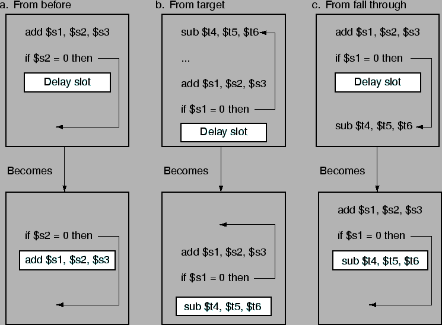

Next: เปรียบเทียบประสิทธิภาพการทำงานของการควบคุมแบบต่างๆ
Up: Branch Hazard
Previous: การคาดเดา Branch แบบพลวัตร
Contents
Index
Compiler และ Assembler สามารถสลับคำสั่งโดยนำคำสั่งนอก Branch มาใส่ไว้หลังคำสั่ง Branch เพื่อไม่ให้เสียวงรอบการทำงาน เรียกว่า Branch Delay Slot ซึ่งรูป 6.38 แสดงวิธีการเติมคำสั่งใน Branch Delay Slot
Figure 6.38:
วิธีการเติมคำสั่งใน Branch Delay Slot
|

|
Vara Varavithya
2005-08-18